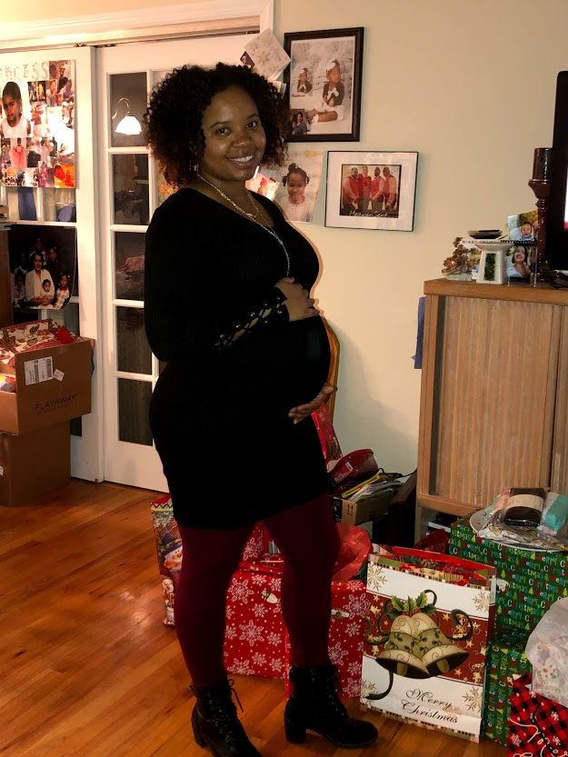
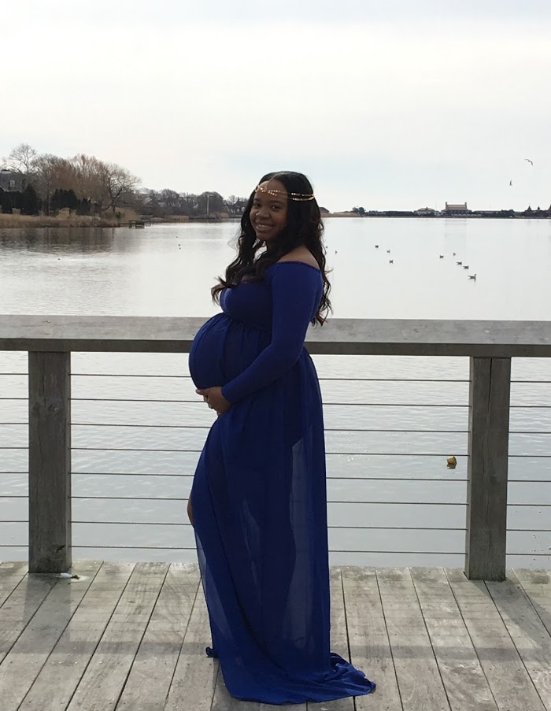
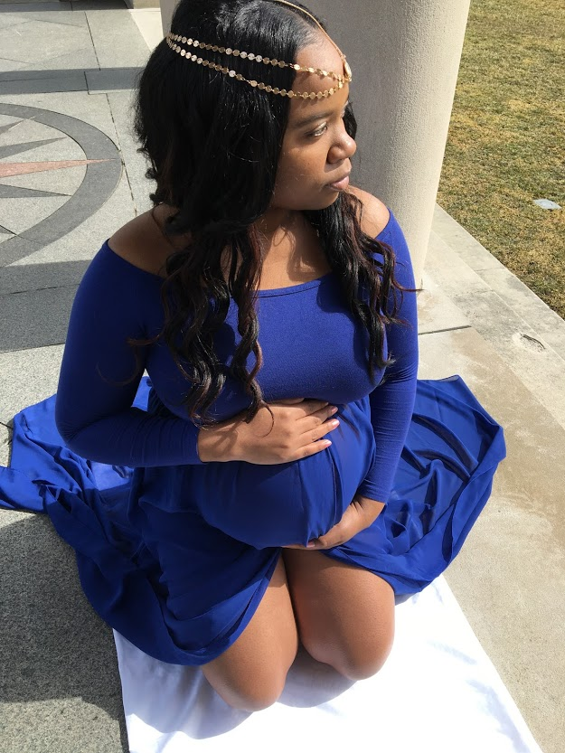

When I first figured I could be pregnant I was at work and very nervous to go get a test. I was thinking there's no way I am pregnant but all in all there was a chance as I didn't protect myself as well as I thought. It took me three times until I was convinced that I really was pregnant. I know, why did I need to take a test three times to finally say I'm pregnant right? Well I thought my eyes were playing tricks on me as silly as that sounds, so those three tests were confirmation that I wasn't bugging. After a few days went by and I finally realized, "Oh shoot, I'm going to be a Mother". Day by day I became excited because I loved children and was having one of my own. My family was so excited for me and was hoping just as much as I did that it was going to be a boy. Did I tell you that I didn't find out the sex? Well, I wanted it to be a surprise but deep down insdie I knew I was going to have a boy.
During the first trimester alone your baby changes from a single fertilized cell (a zygote), to the embryo that implants itself in your uterine wall, to a peach-sized bundle of growing limbs and body systems. Organs take shape, and baby starts to move. Other major first-trimester milestones include the formation of muscles, the production of white blood cells to fight off germs and the development of vocal cords. When we first went to the doctors to get a sonogram, it was the smallest little thing we seen on the monitor and we saw the heartbeat. My heart was full of joy knowing that there really was something growing inside me that I would be responsible for from then on. I was approximately 7-8 weeks along by that time. At 10 weeks I had to take a glucose test because both my parents have diabetes so I was high risk. A lot of people told me they hated the test and the drink was gross but I liked the sweet taste so I enjoyed it, just didn't enjoy having to sit there with nothing to eat the night before and for 3 hours while taking the test. It came back where I had gestational diabetes. I've never been borderline or had any diagnosis of diabetes before becoming pregnant so this was about to be a challenge. I saw it as a positive thing because I got to see my child every month because of the frequent sonograms you have to monitor the baby and its growth monthly to make sure it's on track. Thankfully I didn't have any morning sickness or really any mood swings.
Your baby is very, very busy in the second trimester. By week 18 of pregnancy, he weighs about as much as a chicken breast, and can even yawn and hiccup. By around week 21 you should be able to feel his newly coordinated arms and legs give you little jabs and kicks. By about week 23, your baby takes a cue from you and starts to pack on the pounds; in fact, he'll likely double his weight in the next four weeks. By the end of your second trimester, you'll have a 2-pound human in your belly! I loved seeing all these things on the sonograms when I went monthly. I started to feel movements and seeing the hiccups they talk about the baby is doing at this stage. My stomach would jump and shake when that happens. It was so beatiful.
 Your little one will get a whole lot larger in the third trimester, growing from about 2 1/2 pounds and 16 inches long in week 28 of pregnancy to between 6 and 9 pounds and 19 to 22 inches long in week 40. Indeed, your baby is growing fast — so don't be surprised if his increase in size (along with a decrease in living space) leads to some serious kicks and pokes in your gut. Around week 34 of pregnancy, baby’s body turns southward, settling into a heads-down, bottom-up position — unless, of course, your baby remains stubbornly in the breech position (in which case your doctor will likely attempt to manually turn baby around week 37). Belly oils are specifically created to moisturize the sensitive skin around your stomach. During pregnancy, the skin around your bump grows faster than any other skin on your body, which can result in stretch marks. Belly oils and other stretch mark creams keep it extra-moisturized, which keeps the tearing that causes stretch marks to a minimum. I enjoyed feeling all the kicks, hits, elbows and knees that I felt during my last trimester of being pregnant. I ended up giving birth a month early so my son was born premature.